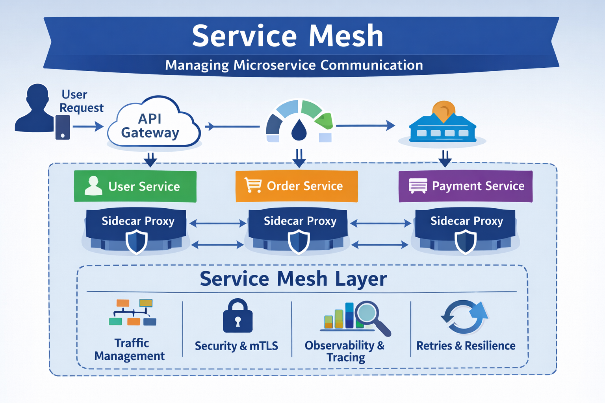
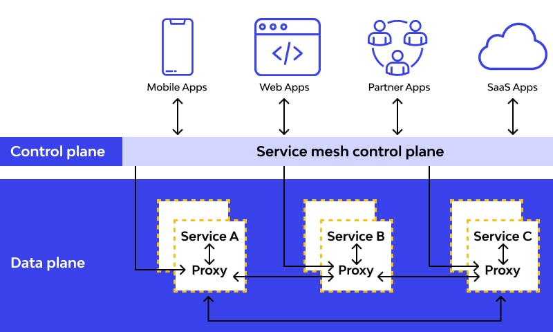

System Design Mastery
Master scalable systems with premium insights
🕸️ Service Mesh — Network manager for microservices
1️⃣ What is it?
Service Mesh is an infrastructure layer that manages service-to-service communication in microservices architectures.
In simple words:
👉 It controls how each services talk to each other.
Instead of every service implementing:
- security
- retries
- monitoring
- load balancing
The service mesh handles it automatically.

2️⃣ Why does it exist? (What problem does it solve?)
In microservices systems:
- Many services communicate
- Network logic becomes complex
- Security and monitoring duplicated
You may have:
- User Service
- Order Service
- Payment Service
- Notification Service
All services must communicate with each other.
Service mesh solves:
- Service discovery
- Load balancing
- Encryption (mTLS)
- Retries and circuit breaking
- Monitoring
Without modifying application code.
3️⃣ What breaks without it?
Without service mesh, every service must implement:
- authentication
- retries
- logging
- encryption
- traffic routing
This makes services complex.
How Service Mesh Works
Service
mesh uses something called Sidecar Proxy.
Each service gets a small proxy
attached.
Example:
Service A → Proxy A → Proxy B → Service B
Services never communicate directly.
Proxies handle communication.
Simple Architecture
Without Service Mesh
Service A → Service B
Service A → Service C
Service B → Service C
Each service handles communication logic.
With Service Mesh
Service A → Proxy A → Proxy B → Service B
Service B → Proxy B → Proxy C → Service C
Proxies manage networking.

What Service Mesh Handles
1️⃣ Traffic Management
Control how
requests flow
Example
: load balancing, routing, retries.
2️⃣ Security
Encrypt service-to-service communication (mTLS).
3️⃣ Observability
Track
requests between services
Example
: metrics, logs, distributed tracing.
4️⃣ Reliability
Automatic retries and failure handling.
5️⃣ When to use / When NOT to use
✅ Use Service Mesh
- Large microservices systems
- Need strong observability and security
Examples: Large SaaS platforms
❌ Avoid Service Mesh
- Small applications
- Monolithic systems
Because it adds operational complexity.
6️⃣ One common mistake
🚨 Confusing API Gateway with Service Mesh
API Gateway →
handles client
→ service communication
Service Mesh → handles service → service communication
7️⃣ Real app connection
In Kubernetes:
User → API Gateway → Service A
↓
Service Mesh
↓
Service B
Each service has a sidecar proxy managing communication.
Netflix,
Uber :
In a large system like Netflix or Uber, a user request might go through :
API Gateway → User Service → Recommendation Service → Payment Service
Service mesh manages all communication between these services.
🎯 Summary
Service mesh manages
communication between microservices without modifying application code.
It uses sidecar proxies
to provide traffic routing, security (mTLS), monitoring, and reliability features.
💡 Pro Tip
Start without a mesh for small
systems.
When microservices grow, add a mesh to standardize security,
traffic control, and observability across all services.
Popular tools:
- Istio
- Linkerd
- Consul Connect